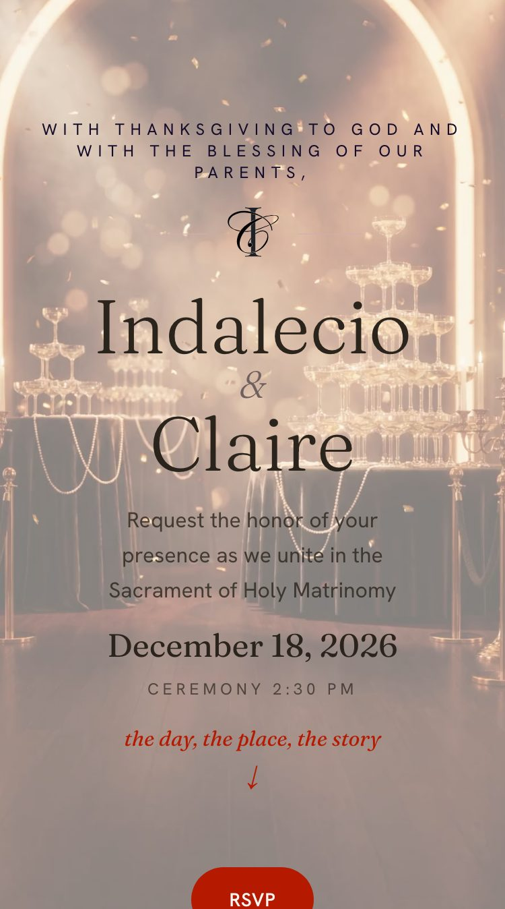
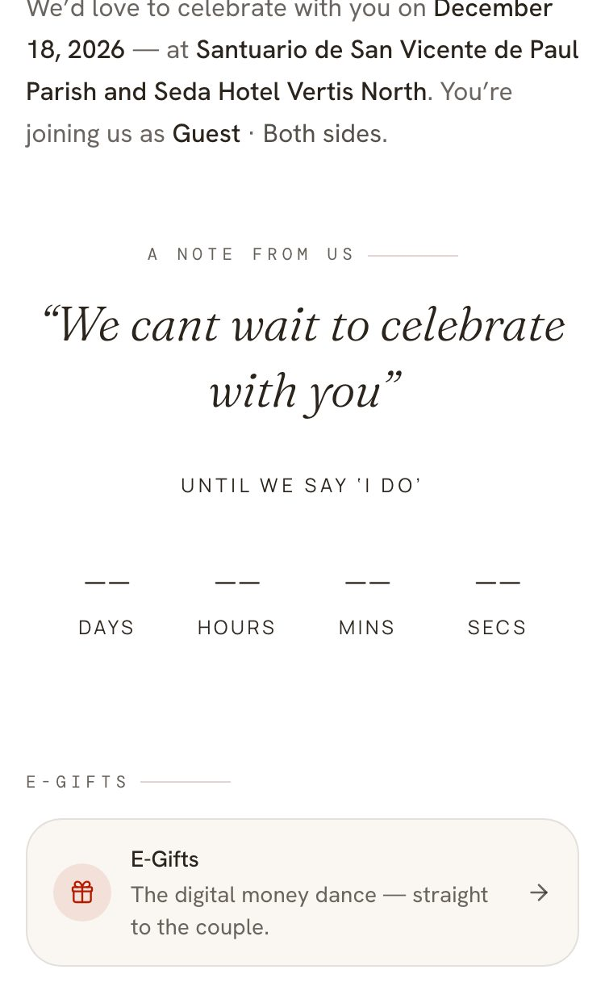
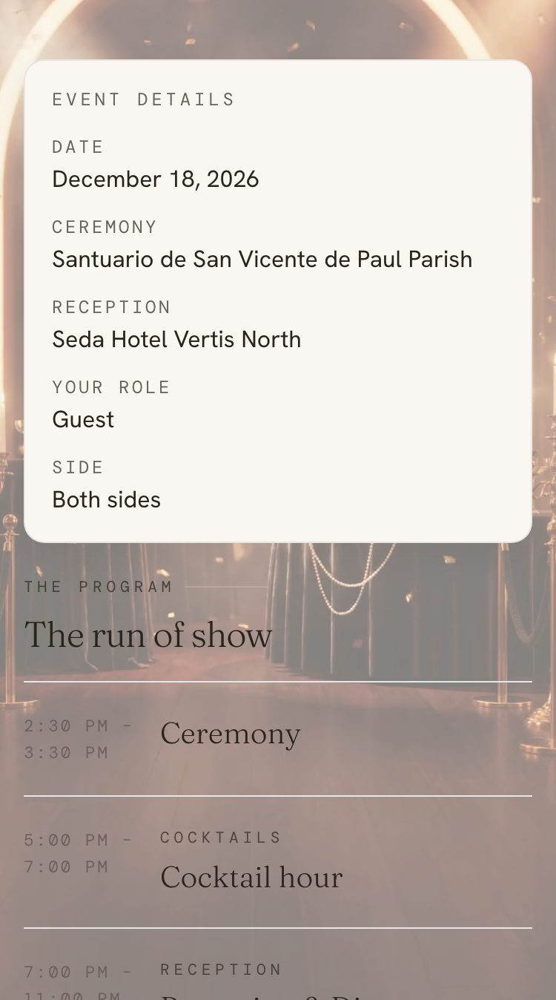
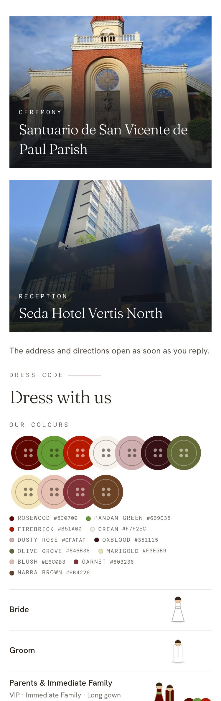
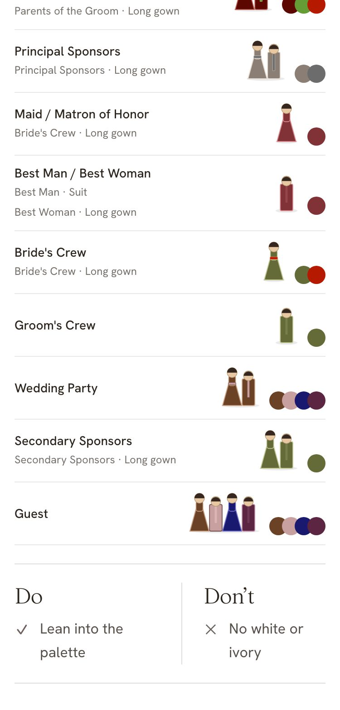
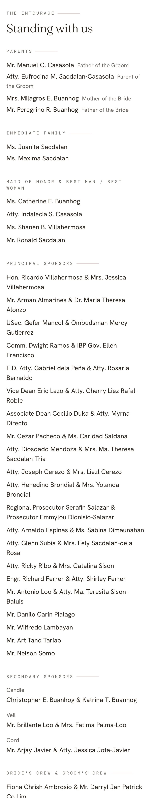
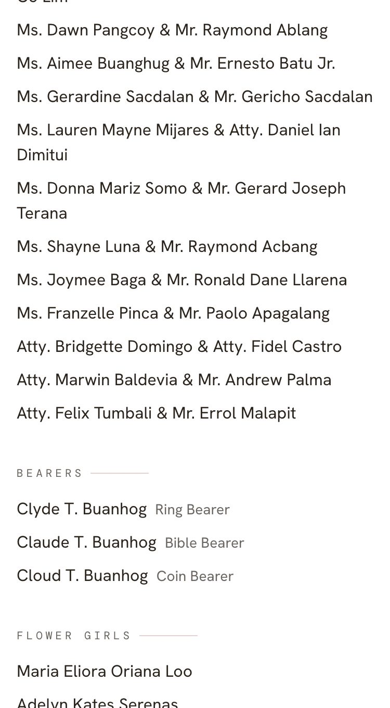
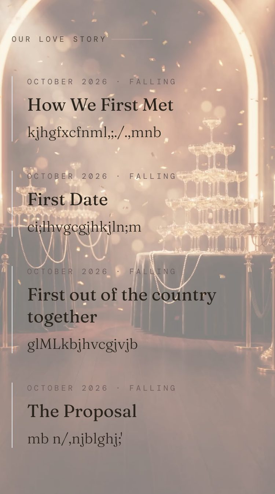
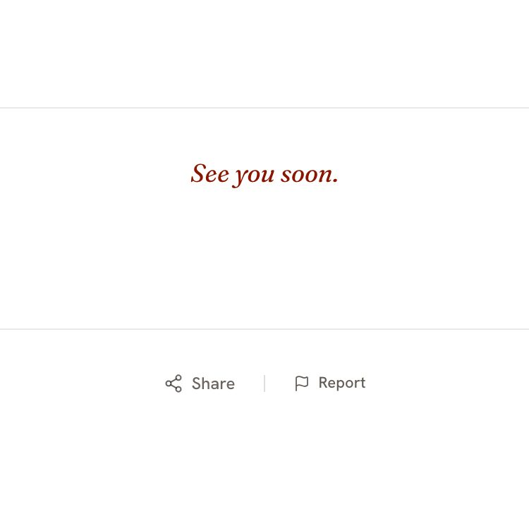

Everything marked real is a slice of the real SiteBody rendered for the owner's own cale-ice from production rows (controller-2026-10-12/cale-ice-real/, keyed guest who hasn't replied, 375 × 812 @2x and 1280 × 800). Everything marked new is drawn: the jump-mark bar and its lit states, the section anchors, the bar hiding on the cover, the desktop top bar, the side panel. Nothing else is invented. Known gaps of the captures (from the INDEX): the countdown reads –– (no JavaScript), the Gatsby ground stops at the first screen in the tall shots (live, it follows the scroll), the fixed bar hid 73 px of the Details page where the first screen ended, the Save the Date prenup photo had no public URL.
Ruling 2026-10-15: the Invitation and Save the Date become one page; the bottom bar's items are jump marks that light up as their section scrolls into view; Me stays its own page; The Day keeps its tabs. The strip below is the real page's own sections in the real order (the four tab pages' renders, concatenated with their headers and fixed bars cut out). The blue marks are the anchors the bar jumps to — the ids the shipped SITE_MENU_ANCHORS already names.









?tab= pages; it is hidden over the cover and slides up on the first swipe.prototypes/entourage_two_columns_2026-10-15_fable.html, not redrawn here.Each frame is a window onto the strip above. The bar is drawn to the shipped SiteMenuBar's own measure (3.5 rem row, 20-px icon, 12-px word, cream, home-indicator strip); the lit item is aria-current="true" on an in-page link, set by a scroll-spy (IntersectionObserver on the three anchors). Beside the frames, the shipped bar as captured, for comparison.
Save the Date is already one scroll (TABBED_STAGES never included it); the real render's bar is Home · Me for a keyed guest. With jump marks, Story becomes a mark because the story IS on this page (stage-bar.ts already allows it; resolveSiteNav only has to let it through on this stage — Q2). The film frame is real; the prenup photo behind it had no public URL for the lab (grey placeholder, as the INDEX says). The countdown and Our Love Story slices are the Invitation page's renders of the same two scenes — on the Save the Date capture they sit under the film overlay and cannot be seen.
Ruling 2026-10-15 "ONE SYSTEM, SEAMLESSLY CONSISTENT": before area 1 (Maker + guest Event Hub) is built, one sheet drawn from the captures; the four areas may only use its pieces, and a guard pins each piece. Everything here is read off the real 1280 render or the approved Maker desktop (2026-10-07).
invitation-shell.tsx: 68 px, cream, × · Setnayan mark · the stage word) is the bar. Its centre cell takes the page's five slots, icon + word; its right cell takes the corner (music · Account). The Maker's top bar is the same row with its own controls. The shipped floating left rail at xl is retired (it floats over the cover in the real render).
max-w-3xl, measures.ts PLATE — the welcome line, note, countdown, E-Gifts, story) and the wide stage 64 rem (xl:max-w-5xl, STAGE — the venue photos, the dress boards, the entourage in two columns). Both are what the 1280 render already draws; the 2xl:max-w-[76rem] ceiling existed only to clear the rail and goes with it. 1440 adds margin, never width.
#A9834B, 2 px) on pressable things only — the Maker desktop's ring. Keyboard focus = an ink ring on a paper gap (:focus-visible, 12.8 : 1 on cream, 11.7 : 1 on a lit tab). Read-only text never reacts; frames only on what you press.
h-11 w-11); tabs become 44-px pills; the corner's music and Account chips go h-10 → h-11. Tab order × → tabs → corner; ← → move between tabs; every icon-only control carries its label; a "Skip to content" link is the first Tab stop; reduced motion = the bar appears without sliding.Every slice is the real 1280 render (the shipped floating rail was painted over where it sat on the cover, and is replaced by piece 1). Where the phone has a real section, the desktop shows that section's own 1280 render — the event-details card, the venue photos at full width, the entourage already in two columns. Nothing is invented; the differences are stamped.
app/[slug]/_lib/hub-tabs.ts — TABBED_STAGES drops 'rsvp' (only 'event' stays tabbed); hubTabHref on the Invitation and Save the Date returns the section anchor (#site-home · #site-details · #site-story) instead of ?tab=; Me keeps its own address (?tab=me → its page) — the page keys stay home/details/story/me so every shared link still lands.app/[slug]/_components/site-body.tsx — pageTabsFor / group() no longer hide the other groups on these two stages: Home's scenes, Details' scenes, the entourage, Story render in that order under one scroll; the data-hub-tab groups become the anchored sections. The Details page's event-details card stays the first thing in the Details section. Scenes far down keep their lazy loading (hub-scenes.tsx runs; the guest-speed work must not regress — ruling).app/[slug]/_components/site-menu-bar.tsx — the slots on these stages are in-page links with aria-current set by a scroll-spy (one IntersectionObserver on the three anchors, the last-crossed one lit); The Day's slots unchanged (its own pages). Hidden while the cover holds (HubCoverHold "leaves" → translateY(100%)), shown on the first swipe; prefers-reduced-motion = no slide.app/[slug]/_lib/site-nav.ts — Save the Date lets story through when the story is on the page (today the keyed bar reads Home · Me although Our Love Story is rendered) — Q2.app/[slug]/_lib/site-menu.ts — the docblock's "each menu tab is its own full page" rule is rewritten for the two stages; the Maker's per-tab page view (2026-10-08 "yes pages") follows the same split (lib/maker-navigator-tabs.ts).each-tab-is-its-own-page.test.ts re-aimed (The Day only); new the-invitation-is-one-page.test.ts (renders the real SiteBody for cale-ice's fixture: the three anchors exist, in order, each slot's href is its anchor, Me is a page); the-first-screen-is-never-hidden.test.ts gains "no bar over the cover".app/_components/desktop-system/ (new, small): TopBar (wraps the shipped header; slots in the centre, corner on the right), SidePanel (the one dialog shell; rsvp-sheet.tsx and maker-sheet.tsx mount into it at lg), the two width classes (re-exported from measures.ts), the hover/focus ring utilities in globals.css, a 44-px press class. PickMenu is already shared.desktop-system-only.test.ts: at lg no page under app/[slug] or the Maker draws its own fixed top/bottom chrome, its own sheet, or a pill row — it greps for the pieces, not the words.site-menu-bar.tsx — at lg the slots render into the header's centre cell; the xl:block rail and its rail-fits.test.ts arithmetic are retired; the bottom bar becomes lg:hidden.guest-hub-bar.tsx — the data-top-corner cluster (music from background-music.tsx, "Account") portals into the header's right cell at lg.rsvp-sheet.tsx — .sn-rsvp-sheet gets its min-width:1024px branch (right edge, 440 px) through SidePanel; heading, steps, Save and the back-closes rule untouched; Escape + focus return added.lg the header is translated away while HubCoverHold holds and slides in on scroll / click (the same handler that lifts the veil and starts the music).Dropped from the first cut because the rulings answered them: which scenes may be two-column (the real 1280 render already decides — venue photos, dress boards and the entourage use the stage), the Camera on a laptop (The Day is out of this scope), whether the bar stays pinned (the top bar is the header, which is already sticky).